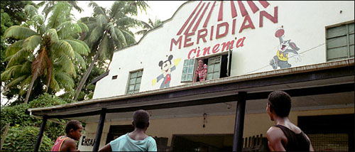
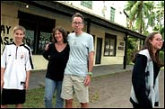

|

July 31, 2005
A Cinema So Indie It's 5,000 Miles Away

Photo by Amy C. Elliott
The Pierson's experiences running a cinema in Fiji are the subject of the documentary "Reel Paradise."
By DAVID HOCHMAN
IF the actor Rob Schneider ever shows up in the jungles of Taveuni, Fiji, he will undoubtedly be hailed as a Polynesian god. "Our audience went absolutely nuts for 'The Hot Chick,' " said John Pierson, a major player in the American independent film scene who spent a year showing harebrained comedies and other escapist fare free at a ramshackle island theater roughly 5,000 miles from Hollywood.
Out there among the spiky coconut palms, untouched by studio test marketers or Happy Meal tie-ins, all the usual conjectures about box office patterns were like orchid petals to the wind. At Mr. Pierson's 288-seat 180 Meridian Cinema, films by Francis Ford Coppola and Martin Scorsese drew giant yawns while the Three Stooges and anything featuring 007 or a grown man in a dress, ˆ la Mr. Schneider, had moviegoers howling with delight.

Photo by Amy C. Elliott
John Pierson with his son, Wyatt, his wife, Janet, and his daughter, Georgia. |
As Mr. Pierson, an early supporter of filmmakers like Spike Lee, Michael Moore and Kevin Smith, said over lunch here recently, "If this crowd liked a film like, say, 'Jackass' or 'Bend It Like Beckham,' the reaction was so raw and vocal, it bordered on hysteria."
The far-flung adventure of the Pierson clan - John was joined by his wife and business partner, Janet, and their teenagers, Georgia and Wyatt, on a yearlong sabbatical from life in Garrison, N.Y. - is the subject of a documentary, "Reel Paradise," opening Aug. 17 in New York and Los Angeles. Directed by Steve James, best known as the director of the 1994 documentary "Hoop Dreams," this new film chronicles the final month of an experiment in cross-cultural pollination, cinema diplomacy and family displacement.
Taveuni is a fragrant agricultural island of roughly 12,000 inhabitants, but Shangri-La it's not. As Dad, lanky and opinionated, battles dengue fever during a 10-movie marathon, Mom copes with break-ins at the family compound while their offspring, who have become celebrities at the island schools, are out learning Fijian swear words and getting hickeys. Picture the Osbournes in an episode of "Survivor" produced by the Sundance Channel.
"The last thing I wanted was to make a vanity piece about how wonderful it was going to the South Pacific and showing free movies," said Mr. James, who was given no direction by Mr. Pierson other than to capture the earsplitting reactions inside the theater.
It was that wild enthusiasm that drew Mr. Pierson to Fiji in the first place. In 2000, feeling a bit weary of the indie film world, he went searching for the most remote theater imaginable to feature on "Split Screen," his show about independent films for the Independent Film Channel. When he first journeyed to Taveuni, near the international date line, Mr. Pierson watched an audience go gaga over a 1941 Three Stooges short, "Some More of Samoa," a politically incorrect lampoon of island culture (the natives try to boil Curly for dinner). Reminded of how magical movies can be, Mr. Pierson said he had to lease the theater for an extended run. All he needed was financial backing from the now well-heeled moviemakers he had helped in the past.
"When John told me about his crazy idea, I thought, 'Great, I'll give you money,' " said Mr. Smith, who said he was indebted to Mr. Pierson for selling his first feature, "Clerks," to Miramax. "But I told him, 'Don't expect to see me there with all those bugs and dirt roads.' "
That a movie theater exists at all on an island with one semi-paved road and no public electricity is a story in itself. Opened in 1954 by an Indian entrepreneur (the "Fitzcarraldo of Fiji," Mr. Pierson called him), the Meridian, with its crude frescoes of Mickey Mouse and Bugs Bunny and windows open to the trade winds, screened Bollywood musicals and outdated American blockbusters to the handful of Taveunians who could afford admission (the average wage is $20 a month). When the Piersons moved to the island in 2002 with a $100,000 operating budget, with three-quarters financed by backers like Mr. Smith, the Meridian had been closed for almost a year.
As "Reel Paradise" makes clear, showing free movies was merely a gateway to a larger experience for the Piersons and those they encountered. The family, tranquil as a hurricane, did not exactly blend in. In the film, Georgia, 16, continually talks back to her mother, and acid-tongued Wyatt, 13, could hold his own against Harvey Weinstein ("How many people do you think stayed awake during 'Gangs of New York?' " he barks to his father. "About five."). Meanwhile, the local Catholic priests insist John's movies are bringing damnation to heaven on earth.
As for that last complaint, Mr. Pierson said that even bad films had a positive effect on island culture. "The same people who watch 'Bringing Down the House' and think it's a horrible racist movie owe it to themselves to watch it again with a black audience on an island in the South Pacific," he said. "Queen Latifah is a large black woman in a white man's world running the show, and whether they could articulate that didn't matter. The cheers in the audience told you how it made them feel."
As Mr. James put it, "It was like that 'Sullivan's Travels' moment where you realize for people whose lives are full of hardship - economic and otherwise - the movies offer a chance to be scared or thrilled or to laugh for a couple hours."
Not to mention, to let the imagination run wild. "We were showing 'Die Another Day,' the last James Bond film, and there's an invisible car sequence," Mr. Pierson said, still beaming from the experience even though it's been two years since he returned and the Meridian has been closed all that time. "The kids didn't ask, 'Do you actually have invisible cars in America?' Their big question was 'How do you keep other people from hitting you?' "
More Press...
|
 |
{% include sidebar.html %}
|
|